Quicklinks
::: Freelancers ::: Raiders' Drydock :::
Goblin & Kobold Ghetto ::: Caravanserai :::
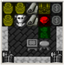Freelancers are Orcish adventurers who have left the Tiaga clans and forged connections within the seedier elements of society in the world at large. They will buy and sell goods for cash, and unlike other markets, they are happy to perform transactions in Orcish currency -- rusty iron shillings. You can get
shillings from them for bountys (totems and blood), by selling them nautical equipment (grog, cloth, and pulleys), or by fencing large gems, gold & silver coins. You can also buy weapons and ammo -- either for your own use, or to equip raiding parties. The Freelancers' Guild is the easiest source for pistols and firearm ammo. The Corsair's Bayonetted Pistol is a pretty good deal. Don't forget, you can always mint your own coins at the forge for 1 bar per 500, this is one way to use up rusty iron in the fort.
Prices subject to change, please see your local Freelancers' guild rep for current rates. Terms and conditions may apply.
Dwarves may be content to lurk meekly in defense of their ivory spires and adamant halls, but Orcs prefer to sow vengeance among the home lands of their foes. From the Raiders' Drydock you can equip a longboat with weapons and enough coin for a crew of Freelancers to depart on a expedition of your choosing. The crew are likely to perish forgotten and alone in a distant land; but there is a chance they may return instead with an assortment of plundered metals, powerful weapons, or even rare blueprints & artifacts for the clan Artisians and Dreamwalkers to study.
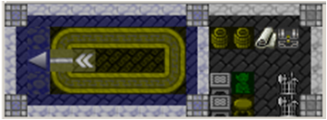
A raiding crew needs three items for their journey: A raiding boat, a bundle of weapons, and
a number (usually 5000) of rusty iron coins for expenses. The boat is normally a longboat, constructed at the drydock from 10 wood logs and 3 ballista parts. Some clan leaders will try to save wood by using xebec ships instead, even though these require cloth and pulleys. The weapons bundle is made from any 5 weapons; even daggers or cheap factory produced gear will be fine. There is a 50% chance that the boat and the weapons bundle survive the journey. Coins can be obtained at the Freelancer's Guild or minted at the forge, and the Raiders will spend this money no matter what. If successful, the raid will produce a loot crate with can be opened at the drydock.
The loot you can get is random, and depends very much on the target! For example, elves may yield wood and saplings, elven weapons, enchanted arrows or raw mithril. A raid on dwarves might yield precious metals, weapons, and rare weapon-grade alloys.
Goblin and Kobold workers are normally picked up by your
Raiders, if you send them on a special trip to a village in the hinterlands.
These voyages are much higher probability of success than raids into hostile
territories, but still requires a boat, weapon kit, and some shillings.
You can also sometimes rescue a gob or kob ship's mate from a Merchant raid, or
you can always just fork over cash to the Shadowbroker to smuggle workers in.
Until deployed into their workshop, Goblin workers will be stored along with
other useful items in your Tools stockpile.
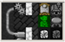
The Stonecutter's Shanty houses a goblin masonry apprentice and his workshop.
He takes on tasks which are beneath the notice of Orcish masons, like grinding
excess stone, sorting the magma-safe rocks from others, crafting rock weapons
and traps, and cutting blocks
back apart into stone. He can also make rock bins and barrels, although be
warned that they can be pretty heavy.
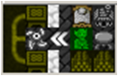
The Sawmill Shanty houses a goblin woodworker and his shop. The goblin
woodworker is excellent at stretching limited resources; he can cut 20
planks
from 5 logs. He can even make big batches of 10 bins or barrels from 5
logs, as long as he has access to some metal for fasteners.
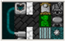
The Tinkerer's Shanty houses a goblin who can craft advanced
flachette guns, pistols, and muskets (although the last, only by using up a
stolen human toolkit). He can also hand-load rounds for guns, making his
own black powder from scratch without help of a chemist. Since the
tinkerer uses so much brass and lead, he has his own small low-temperature
furnace to help with smelting a few basic ores.
 The Poisoner's Hut houses a kobold who creates and applies poison to ammo,
weapons, and trap components. Besides using a number of poison recipes
stolen from the Free Peoples, the kobold poisoner has developed a few extra
poisons from Wetland and Boreal plants: an improved universal Blight poison
distilled from kobold-bulb and cadaverine, and a Pinkskin Bane poison from
icicle mint and Taiga bloodberry.
The Poisoner's Hut houses a kobold who creates and applies poison to ammo,
weapons, and trap components. Besides using a number of poison recipes
stolen from the Free Peoples, the kobold poisoner has developed a few extra
poisons from Wetland and Boreal plants: an improved universal Blight poison
distilled from kobold-bulb and cadaverine, and a Pinkskin Bane poison from
icicle mint and Taiga bloodberry.
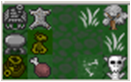
The Hunter's Hut can equip kobold thieves with a dagger and
bag, and send them out into the world with a chance to steal some precious
metals and gems for the clan. He can also forge batches of darts, useful
if the Goblin Tinkerer is providing the troops with flachette guns.
Flachette guns have a good rate of fire and so dart batches can be effective for
training
up a gun warband if metal guns & ammo are in low supply. They also make
fine trap components, perhaps in combination with poisoned darts.
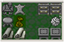
The Kobold Textile Hut can batch produce sets of clothing
from cloth, wool, or silk; and can process grasses
to wicker. Wicker bins are valued for their light weight in any fort, and
other wicker furniture can be in great demand in overland camps. He
can also practice a few tribal weavers' tricks such as weaving rope from
rope-reed, and stripping wood-stalks down to logs.
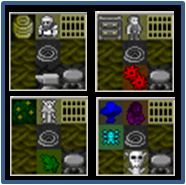
The Labor Cells are a special case. Sometimes your Raiders will take
captive a Dwarf, Drow, Elf or Human. Large clanholdings generally pass
these captives quickly through contacts at the Caravanserai's Shadowbroker
for a significant ransom. However, camps which are short on simple
materials such as stone, silk, wood, or basic crafts can choose to deploy these
guests as laborers, although their work presents a significant drain on food
resources.
 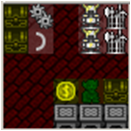
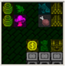
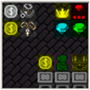
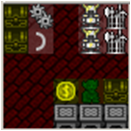
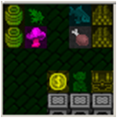
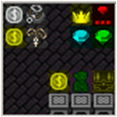
The Caravanserai is a set of 4 bazaars that buy and sell goods for coin.
It is common to loot caravanserai blueprints when Raiding Merchant Shipping, or
you can buy additional blueprints from the Shadowbroker bazaar.
These traders can help you profit while decluttering your Fort by buying all
sorts of goods such as food, cloth, leather, and weapons from your base in
exchange for cold, hard cash. You can turn around and buy stuff with
the coins, or even with coins you mint. The bazaars mostly deal in the
traditional currency of copper, silver, and gold coins; which can be broken into
Orcish shillings at the Freelancer's Guild. A few high-end transactions
are forbidden by the international Caravanserai charter, and these must only be
conducted in platinum currency available at the Shadowbroker.
The Common Bazaar lets you sell cloth and leather, exchange low value coins to
high, and buy anvils and crates of metal.
The Farmers Bazaar lets you sell food and booze, buy wicker, potash, and gypsum,
and buy seed packets. You can buy surface, cave, and boreal seeds which
are collected by master gardeners for use in certain biomes. There's also
a "poisoner's packet," for discerning customers.
The Arms Bazaar let you sell junk armor, although the price is a low fixed rate
(so if it's a good material or decorated, you might want to dispose it a
different way). You can also buy arrows, mechanisms, trap components, and
import weapons not common to Orc domestic markets like crossbows and warhammers.
The Shadowbroker helps you acquire platinum coins for special transactions,
acquire certain tools whose sale falls outside the bounds of economic
treaty law, and facilitates immigration of goblins & kobolds and the ransom of
captives from hostile civilizations.
::: Home :::